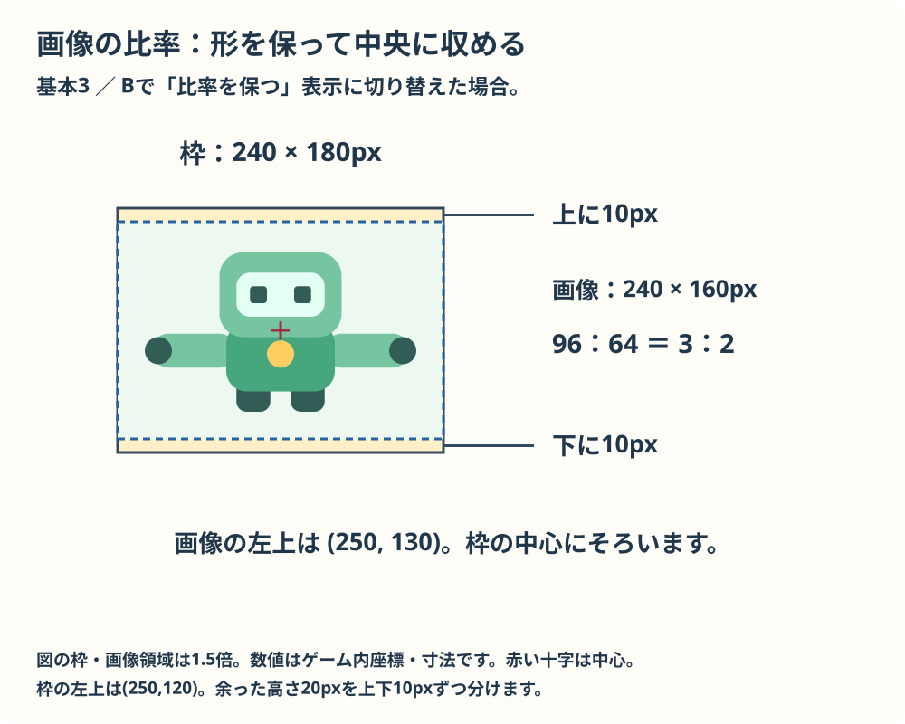

画像の位置と大きさを作る
始める前に
ZIPを展開してできたフォルダーでindex.htmlを開きます。ZIPにはひな型の3ファイルと画像が入っています。
WindowsでZIPを展開する（動画）
変更前を探し、変更後のコードに置き換えて保存し、index.html を開き直します。
ステップ 1：位置と大きさを指定する
このステップの見本を図で見る
右端250+240=490、下端120+180=300
画像を入れる場所を先に決める。
drawImageに枠と同じ4つの数を渡す
画像を240×180に引き伸ばして描く。
ゲーム画面とコードの前後を見る
このステップの見本
この行を足す前 変わったコードの一例（script.js）
image.onload = () => { asset.status = image.naturalWidth > 0 && image.naturalHeight > 0 ? "ready" : "error"; };
見本で確かめること
長方形の画像を240×180の枠に表示します。
目標
位置と大きさを指定する。
小さな作業
上から順に作業します。目印を探し、その下のコードを書きます。
画像と表示方法を覚える
作業用の script.js の先頭近くで、次の目印のすぐ下に追加します。
目印
const ctx = canvas.getContext("2d");追加するコード
let asset, fit;let は後で値を変えられる変数を作ります。asset は画像と読込状態、fit は表示方法を覚えます。
画像を読み込む関数を用意する
変数の行の下で、次の目印のすぐ下に追加します。
目印
let asset, fit;追加するコード
function loadImage(src) {
const image = new Image();
const asset = {image, status: "loading"};
return asset;
}new Image() は画像を扱うためのものを作ります。asset に画像と読込中の状態をまとめ、return で呼び出し元へ返します。まだ読み込む先を設定していないため、次の作業を続けます。
読込完了を記録する
loadImage() の状態を作る行の下で、次の目印のすぐ下に追加します。
目印
const asset = {image, status: "loading"};追加するコード
image.onload = () => { asset.status = image.naturalWidth > 0 && image.naturalHeight > 0 ? "ready" : "error"; };onload は読み込みが終わったときに動きます。> はより大きい、&& は両方の条件が必要という意味です。幅と高さが 0 より大きければ ready、そうでなければ error にします。
読込失敗を記録する
onload の行の下で、次の目印のすぐ下に追加します。
目印
image.onload = () => { asset.status = image.naturalWidth > 0 && image.naturalHeight > 0 ? "ready" : "error"; };追加するコード
image.onerror = () => { asset.status = "error"; };onerror は読み込めなかったときに動き、状態を error にします。
画像の読み込みを始める
onerror の行の下で、次の目印のすぐ下に追加します。
目印
image.onerror = () => { asset.status = "error"; };追加するコード
image.src = src;src に画像の場所を渡すと読み込みが始まります。
画像を指定して開始する
start() から update() の閉じ波括弧までで、次の範囲を置き換えます。
置き換える範囲
function start() {
}
function update() {
}置き換えるコード
function start() {
fit = false; asset = loadImage("assets/player-alt.png");
}
function update() {
}= は右の値を左に入れる代入です。表示方法を false にし、index.html と同じフォルダーの assets/player-alt.png を読み込みます。画像付きひな型の ZIP にある assets フォルダーを 3 ファイルと一緒に置きます。
枠を描く
draw() の画面を消す行の下で、次の目印のすぐ下に追加します。
目印
ctx.clearRect(0, 0, canvas.width, canvas.height);追加するコード
ctx.fillStyle = "#26334a"; ctx.font = "24px sans-serif";
ctx.strokeStyle = "#26334a"; ctx.lineWidth = 2; ctx.strokeRect(250, 120, 240, 180);文字と線の色を決め、幅 2 の線で枠を描きます。strokeRect の数字は左、上、幅、高さで、枠は横 250、縦 120、幅 240、高さ 180 です。
画像か読込状態を表示する
枠を描く行の下で、次の目印のすぐ下に追加します。
目印
ctx.strokeStyle = "#26334a"; ctx.lineWidth = 2; ctx.strokeRect(250, 120, 240, 180);追加するコード
if (asset.status === "ready") {
ctx.drawImage(asset.image, 250, 120, 240, 180);
} else ctx.fillText(asset.status === "error" ? "画像を読み込めません" : "読み込み中", 250, 100);if は条件が成り立つときに実行し、=== は同じかの比較です。読込済みなら枠に合わせて画像を描きます。条件 ? A : B は条件に応じて A または B を選び、失敗と読込中を区別します。
表示方法を示す
画像の表示処理の閉じ波括弧の下で、次の目印のすぐ下に追加します。
目印
} else ctx.fillText(asset.status === "error" ? "画像を読み込めません" : "読み込み中", 250, 100);追加するコード
ctx.fillText("引き伸ばす", 250, 330);枠の幅と高さに合わせるため、元の画像と縦横比が違えば形が変わります。
画像の読み直しを案内する
表示方法の行の下で、次の目印のすぐ下に追加します。
目印
ctx.fillText("引き伸ばす", 250, 330);追加するコード
ctx.fillText("R: 読み直す", 180, 370);R キーで読み直す案内を表示します。
Rで画像を読み直す
draw() の後、gameLoop() の先頭行の前で、次の目印のすぐ上に追加します。
目印
function gameLoop() {追加するコード
window.addEventListener("keydown", event => {
if (event.repeat) return;
if (event.key.toLowerCase() === "r") { start(); return; }
});keydown はキーを押したときに起きます。押し続けた繰り返しを除き、キーを小文字にして R なら start() で画像を読み直します。
保存して作業用の index.html を再読み込みし、画像が枠いっぱいに表示されることを確かめます。
保存後の確認
保存してゲーム画面を更新する（動画）
index.html を再読み込みします。長方形の画像を240×180の枠に表示します。 この段階の見本を開く
小さな練習
x=250を変えて位置を比べます。 練習後はコードを元に戻してください。
ステップ 2：縦横比を保つ
このステップの見本を図で見る
幅240、高さ180をそのまま指定
横2倍、縦3倍で形が変わる。
min(240/120,180/60)=2 → 120×2,60×2
縦も横も2倍。形を変えずに収まる。
ゲーム画面とコードの前後を見る
このステップの見本
ctx.fillText("引き伸ばす", 250, 330);
変わったコードの一例（script.js）ctx.fillText(fit ? "形を変えずに収める" : "引き伸ばす", 250, 330);
見本で確かめること
Bで引き伸ばしと比率を保つ表示を比べます。
目標
縦横比を保つ。
小さな作業
上から順に作業します。目印を探し、その下のコードを書きます。
縦横比を保つ表示を加える
draw() の画像を描く行で、次の範囲を置き換えます。
置き換える範囲
ctx.drawImage(asset.image, 250, 120, 240, 180);置き換えるコード
if (fit) {
const scale = Math.min(240 / asset.image.naturalWidth, 180 / asset.image.naturalHeight);
const width = asset.image.naturalWidth * scale, height = asset.image.naturalHeight * scale;
ctx.drawImage(asset.image, 250, 120, width, height);
} else ctx.drawImage(asset.image, 250, 120, 240, 180);/ は割り算、* は掛け算です。枠の幅と高さを元の幅と高さで割り、小さい倍率を Math.min で選びます。両方に同じ倍率を掛けるので、枠にはみ出さず形も変わりません。
今の表示方法を示す
表示方法の文字で、次の範囲を置き換えます。
置き換える範囲
ctx.fillText("引き伸ばす", 250, 330);置き換えるコード
ctx.fillText(fit ? "形を変えずに収める" : "引き伸ばす", 250, 330);fit が true なら「形を変えずに収める」、それ以外なら「引き伸ばす」と表示します。
切り替えキーを案内する
操作案内の行で、次の範囲を置き換えます。
置き換える範囲
ctx.fillText("R: 読み直す", 180, 370);置き換えるコード
ctx.fillText("R: 読み直す / B: 表示方法を切替", 180, 370);B で表示方法を切り替える案内を加えます。
Bで表示方法を切り替える
キー入力処理の R の判定と閉じ括弧の間で、次の範囲を置き換えます。
置き換える範囲
if (event.key.toLowerCase() === "r") { start(); return; }
});置き換えるコード
if (event.key.toLowerCase() === "r") { start(); return; }
if (event.key.toLowerCase() === "b") fit = !fit;
});!fit は真偽値を反転します。B を押すたび false と true が切り替わります。
保存して再読み込みし、B を押し、画像の形を保った表示と引き伸ばした表示が切り替わることを確かめます。
保存後の確認
Bで引き伸ばしと比率を保つ表示を比べます。 この段階の見本を開く
小さな練習
枠の幅240を変え、計算も合わせます。 練習後はコードを元に戻してください。
ステップ 3：枠の中心に置く
このステップの見本を図で見る
120 + 180/2 = 210
高さ180で枠をいっぱいにする。
120 + (180-120)/2 = 150
上下の余白はどちらも30px。
ゲーム画面とコードの前後を見る
このステップの見本
ctx.drawImage(asset.image, 250, 120, width, height);
変わったコードの一例（script.js）ctx.drawImage(asset.image, 250 + (240 - width) / 2, 120 + (180 - height) / 2, width, height);
見本で確かめること
Bで比率を保つ表示にすると上下に同じ余白ができます。
目標
枠の中心に置く。
小さな作業
上から順に作業します。目印を探し、その下のコードを書きます。
画像を枠の中央に置く
fit の場合の画像描画で、次の範囲を置き換えます。
置き換える範囲
ctx.drawImage(asset.image, 250, 120, width, height);置き換えるコード
ctx.drawImage(asset.image, 250 + (240 - width) / 2, 120 + (180 - height) / 2, width, height);枠と画像の幅の差を 2 で割って左側の余白にし、高さの差も同じように上下へ分けます。たとえば幅が 180 なら余り 60 の半分、30 を左に足します。

96×64の画像は横と縦が3対2です。240×180の枠に比率を保って入れると、画像は240×160になります。余った高さ20pxを上下10pxずつに分けると中央に置けます。
保存して再読み込みし、B で形を保つ表示を選び、画像が枠の中央に収まることを確かめます。
保存後の確認
Bで比率を保つ表示にすると上下に同じ余白ができます。 この段階の見本を開く
小さな練習
枠の高さを変えて余白を確かめます。 練習後はコードを元に戻してください。
画像を自分の絵に替えるには
assets/player-alt.pngを自分のPNGに差し替えられます。別の大きさでもnaturalWidthとnaturalHeightから比率を計算します。
index.html、style.css、script.jsとassetsフォルダーを一緒にコピーしてください。
自分のゲームに組み込むには
assetとloadImage、表示先のx・y・幅・高さとfitの計算を移します。
startで画像を読み、drawのready判定の中で自分の表示位置を指定します。
gameLoopを増やさず、既存のstart・update・drawから処理を呼びます。再挑戦では持ち込んだ位置や状態、時刻を初期化します。